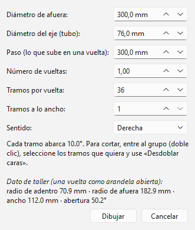
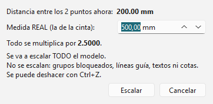
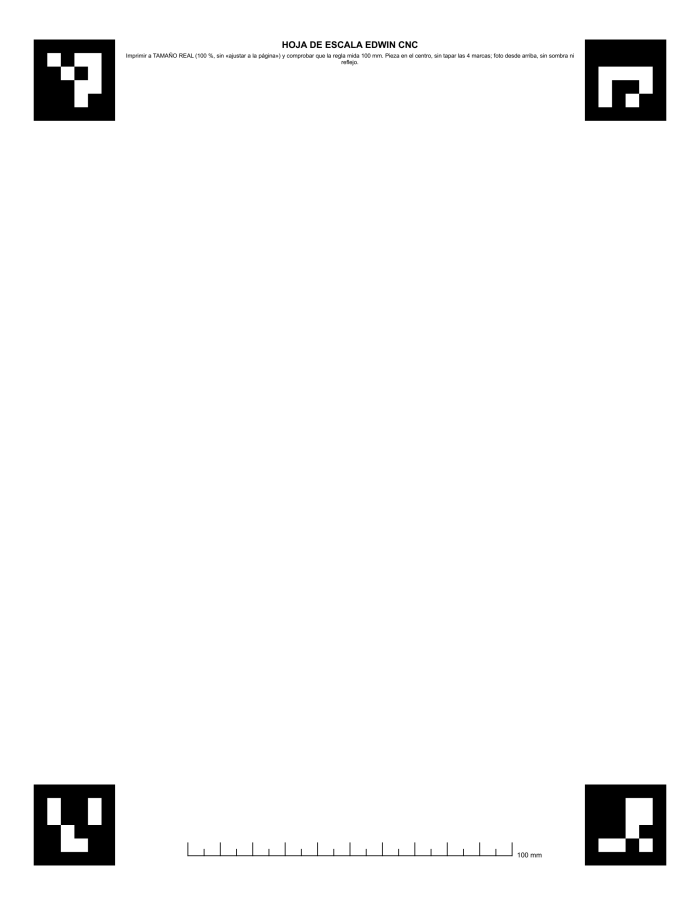
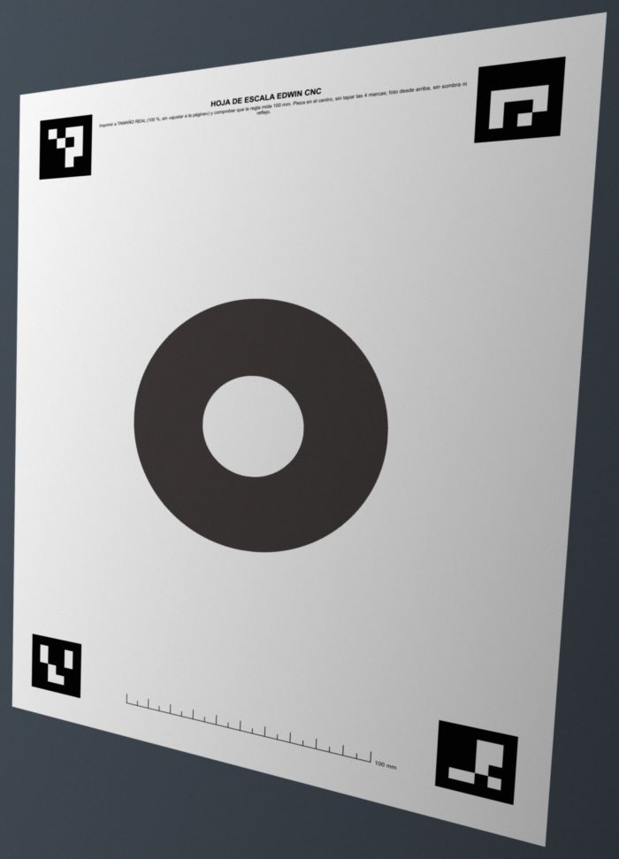
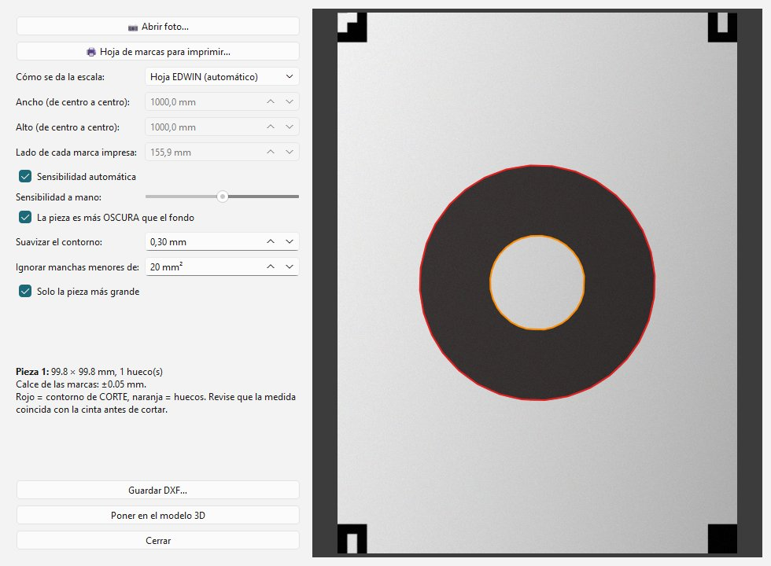
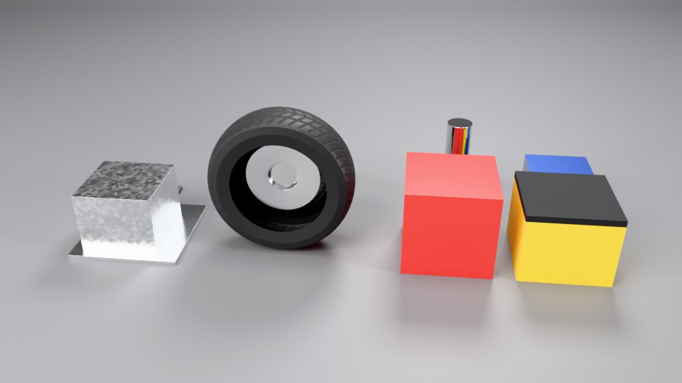
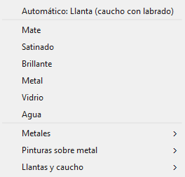
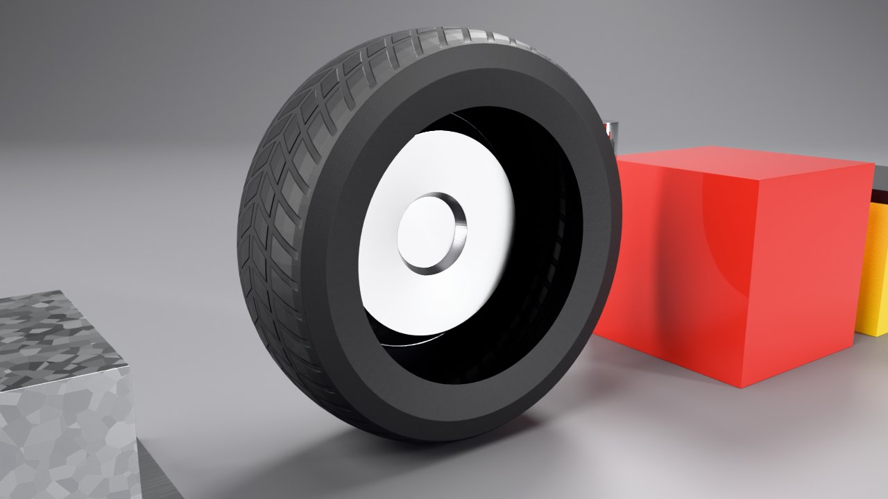
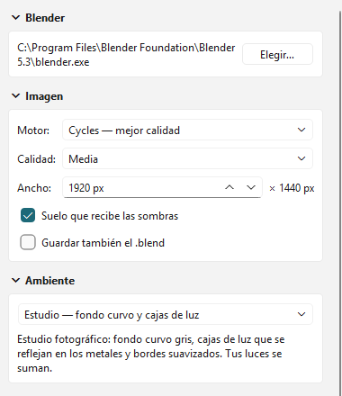

Para empezar
EDWIN CNC 3D sirve para dibujar piezas en 3D (tolvas, ductos, helicoidales) y sacarles el plano de corte en un archivo DXF. Ese archivo se abre en EDWIN CNC CAD-CAM, que hace el código G para la mesa de plasma.
Instalar
- Descargue el instalador EDWIN-CNC-3D-1.0.4-Windows-64-bits.exe desde ingemaqsewing.github.io (versión de prueba) y siga los pasos. Funciona en Windows 10 y 11 de 64 bits.
- Si ya tenía una versión anterior, instale encima: no hace falta desinstalar nada.
Dónde están las herramientas de EDWIN CNC
Las herramientas para corte están en tres lugares:
- El menú Extensiones ▸ EDWIN CNC.
- La barra de botones EDWIN CNC: Desdoblar caras, Pieza por medidas, Helicoidal, Escala 2 puntos y Foto → DXF. Si no la ve, haga clic derecho en una zona vacía de las barras y active «EDWIN CNC».
- El clic derecho sobre caras o grupos seleccionados, para «Desdoblar caras (EDWIN CNC)…».
MedidasEl programa trabaja en milímetros. Dibuje la pieza con su medida interna: el plano sale con la medida tal cual está dibujada, sin compensar el espesor de la lámina.
Desdoblar caras
Acuesta en plano las caras que usted escoja: la tolva entera, la mitad, una pestaña. Usted decide cómo partir la pieza según el tamaño de la lámina y la dobladora.
- Seleccione las caras. Clic en una cara; Ctrl + clic para agregar más. También puede seleccionar un grupo entero.
- Toque Desdoblar caras en la barra, o Extensiones ▸ EDWIN CNC ▸ Desdoblar caras seleccionadas…
- Revise la vista previa. Escriba el nombre de la pieza (sale escrito en el plano).
- En Marcar dobleces desde ponga desde cuántos grados una arista se marca como doblez. Con 15° las aristas casi planas de un cono no se marcan, y los quiebres de verdad sí.
- Toque Guardar DXF… y ábralo en EDWIN CNC CAD-CAM.

AvisosSi una cara está torcida (sus puntas no están en un mismo plano) o el plano se monta sobre sí mismo, la ventana lo avisa. En ese caso seleccione menos caras y desdoble por partes.
Pieza por medidas
Escriba las medidas y la pieza se dibuja sola en 3D, como lámina (sin espesor), lista para desdoblar. Son las mismas piezas de las calculadoras de taller: tolva cónica, tolva en U (mezcladora), tolva piramidal, cuadrado a redondo, reducción excéntrica, codo de gajos y boca de pescado (tubo con tubo). Desde la misma ventana también se abre la helicoidal.
- Toque Pieza por medidas en la barra, o Extensiones ▸ EDWIN CNC ▸ Pieza por medidas (tolvas, transiciones, tubos)…
- Escoja la pieza, escriba las medidas en milímetros y toque Dibujar. Si una medida no sirve (por ejemplo una tolva en U más baja que la mitad de su ancho), la ventana dice por qué y no deja dibujar.
- La pieza queda seleccionada. Toque Desdoblar caras para sacar el plano. Las partes curvas se toman con un solo clic.
CosturasEl codo sale con un grupo por gajo y las costuras alternadas (garganta, dorso…), y la boca de pescado sale con el tubo principal con su agujero exacto y el ramal aparte. Si quiere partir una pieza, seleccione solo las caras de cada parte y desdóblelas por separado.
Acomodar en láminas
Acomoda las piezas desdobladas en láminas para gastar el menor material posible (en los talleres lo llaman nesting). Acomoda piezas de cualquier forma, las gira y hasta mete las pequeñas dentro de los huecos de las grandes.
- En la ventana de Desdoblar caras, toque Acomodar en láminas…
- Escriba el tamaño de la lámina (por defecto 2440 × 1220), el margen al borde, la separación entre piezas (ancho del corte más lo que quiera dejar), si se pueden girar y cuántas copias de cada pieza necesita.
- Revise la vista previa: dice cuántas láminas usa y qué porcentaje de cada una se aprovecha. Quitar acomodo vuelve al plano sin acomodar.
- Toque Guardar DXF…: las piezas van en CORTE y MARCADO, y las láminas dibujadas en REFERENCIA, una al lado de la otra.
Veta y girosSi la lámina tiene veta o acabado que debe ir en un sentido, escoja No girar. Cada 15° aprovecha más en piezas raras, pero tarda más. La precisión Fina junta más las piezas y también tarda más.
Helicoidal (sinfín)
Dibuja la aleta de un sinfín con sus medidas. Después se escogen tramos pequeños y se desdoblan, como se hacía en SketchUp.
- Toque Helicoidal en la barra, o Extensiones ▸ EDWIN CNC ▸ Helicoidal (sinfín)…
- Escriba las medidas (vea la tabla) y toque Dibujar. La helicoidal queda como un grupo, con el eje vertical en el origen.
- Doble clic sobre ella para entrar al grupo.
- Clic en un tramo: se selecciona entero. Ctrl + clic para agregar los siguientes.
- Toque Desdoblar caras y guarde el DXF.

| Casilla | Qué es |
|---|---|
| Diámetro de afuera | El borde exterior de la aleta. |
| Diámetro del eje (tubo) | Donde la aleta va soldada al tubo. |
| Paso | Lo que sube la aleta en una vuelta completa. |
| Número de vueltas | Puede ser fraccionario: 0,5 es media vuelta. |
| Tramos por vuelta | En cuántos pedazos se parte cada vuelta. Con 36, cada tramo es de 10°. |
| Tramos a lo ancho | En cuántos pedazos se parte del eje al borde. Normalmente 1. |
| Sentido | Derecha o izquierda, según hacia dónde debe empujar el sinfín. |
Tramos pequeñosLa helicoidal se estira al formarla, así que ningún plano es exacto. Mientras más pequeño el tramo que desdobla, menos se deforma.
La ventana también muestra el dato de taller: la arandela abierta equivalente a una vuelta (radio de adentro, radio de afuera, ancho y abertura), por si prefiere cortarla así.
En líneaSi solo necesita la arandela abierta para cortar (sin el modelo 3D), use la calculadora de helicoidal en línea: da el plano acotado, cuántas piezas cortar y el DXF. Hay más calculadoras para tolvas y ductos en EDWIN CNC Herramientas de diseño para taller.
Escala por 2 puntos
Pone el modelo a la medida real cuando usted conoce una distancia: un modelo importado que vino a otra escala, una foto puesta como referencia, un escaneo.
- Toque Escala 2 puntos en la barra, o Extensiones ▸ EDWIN CNC ▸ Escala por 2 puntos
- Clic en el primer punto de una medida que conozca. Se pega a esquinas y bordes, igual que la cinta métrica.
- Clic en el segundo punto.
- Escriba la medida real en milímetros (la de la cinta) y toque Escalar.

- Sin nada seleccionado se escala todo el modelo. Con algo seleccionado, solo eso.
- No se escalan los grupos bloqueados, las líneas guía, los textos ni las cotas. La ventana lo recuerda.
- Se deshace con Ctrl + Z.
- Si está dentro de un grupo, salga primero (Esc o clic afuera).
Foto → plano → DXF
Calca una pieza plana (plantilla, brida, letra, platina) desde una foto del celular y la guarda en DXF a escala real, lista para cortar.
1. Imprimir la hoja de marcas (una sola vez)
- Abra Foto → DXF y toque Hoja de marcas para imprimir…
- Escoja Hoja de escala EDWIN en papel carta o A4 y guarde el PDF.
- Imprímalo a tamaño real: al 100 %, sin «ajustar a la página».
- Mida la regla de abajo con un flexómetro: debe dar 100 mm. Si no, revise la impresión.
Las 4 marcasSon los cuadros negros de las esquinas. El programa las reconoce en la foto y con ellas endereza la imagen y saca la escala. No las tape ni las doble.

2. Tomar la foto
- Ponga la pieza en el centro de la hoja, sin tapar las marcas.
- Tome la foto desde arriba, lo más derecho que pueda, con las 4 marcas completas en la foto.
- Luz pareja, sin sombra de usted ni del celular encima de la pieza.
- Lámina brillante: ópaquela con talco o spray mate. Los reflejos confunden el contorno.
- No use zoom digital ni modo retrato. Pásese la foto al PC (WhatsApp Web, cable o correo).
3. Sacar el contorno
- Toque Abrir foto… y escoja la foto.
- El programa endereza la foto y dibuja el contorno: rojo es el corte de afuera y naranja, los huecos.
- Revise la medida que aparece («Pieza 1: …») contra el flexómetro.
- Toque Guardar DXF…, o Poner en el modelo 3D para seguir trabajándola (por ejemplo, darle espesor).


Si el contorno no sale bien
| Ajuste | Para qué sirve |
|---|---|
| Sensibilidad automática | Quítela y mueva la barra si el contorno se come parte de la pieza o agarra sombras. |
| La pieza es más OSCURA | Desmárquela si la pieza es más clara que el fondo. |
| Suavizar el contorno | Más alto, menos puntos y bordes más lisos. Con 0,30 mm se ve bien en casi todo. |
| Ignorar manchas menores de | Quita puntos sueltos y polvo. Súbalo si salen manchitas como piezas o huecos. |
| Solo la pieza más grande | Desmárquelo para calcar varias piezas de la misma foto. |
Piezas grandes
En Cómo se da la escala hay dos maneras más:
- 4 marcas grandes: imprima «4 marcas grandes» (una marca por hoja) y póngalas en las esquinas de un rectángulo alrededor de la pieza, cada una en la esquina que dice. Mida entre los centros (la cruz blanca): el ancho va de la marca 0 a la 1 y el alto, de la 0 a la 3. Las dos diagonales deben medir lo mismo. Escriba el ancho y el alto en la ventana.
- 4 esquinas a mano: sin marcas. Escriba el ancho y el alto de algo rectangular que salga en la foto (por ejemplo, una lámina de 1220 × 2440) y haga clic en sus 4 esquinas, empezando por la de arriba a la izquierda. Si las marca en otro orden, el programa las ordena solo.
Antes de cortarUna foto tiene error. Con la hoja y una buena foto queda cerca de ±1 mm; con piezas grandes, más. Mida siempre la pieza con el flexómetro y compare. Si la ventana dice «toca el borde o se mete en una marca», la pieza puede estar recortada: tome otra foto con la pieza más centrada.
Render con Materiales EDWIN
Saca una foto realista del modelo, como las que se hacían con V-Ray: metal que brilla, pintura con reflejos y llantas con su labrado. La imagen la hace Blender por detrás; usted no tiene que abrirlo.

1. Tener Blender
Instale Blender desde blender.org. EDWIN CNC 3D lo encuentra solo. Si no lo encuentra, en la pestaña Renderizar toque Elegir… y busque blender.exe.
2. Pintar y escoger el acabado
- Pinte las caras con un material con nombre de la bandeja de materiales, por ejemplo «Llanta trasera» o «Rojo esmalte».
- Clic derecho sobre ese material en la bandeja ▸ Acabado para el render.
- Escoja un grupo (Metales, Pinturas sobre metal o Llantas y caucho) y el acabado.
AutomáticoSi no escoge nada, el programa lo adivina por el nombre: «Llanta» o «neumático» sale como llanta, «inox» como metal, «madera» como satinado.

Metales
Traen su propio color.
- Acero natural (cold rolled)
- Inox cepillado
- Cromo / inox espejo
- Galvanizado
- Aluminio
- Lámina hot rolled
- Oro, bronce y cobre
Pinturas sobre metal
Usan el color con que pintó.
- Mate (polvo electrostático)
- Satinada
- Brillante / esmalte
- Texturizada (arrugada)
- Metalizada (escarcha)
Llantas y caucho
El labrado sigue la rueda.
- Llanta (caucho con labrado)
- Caucho liso
- Caucho usado (opaco)
- Rin de aluminio maquinado
3. Llantas
Dibuje la llanta como un sólido redondo y píntela con un material de acabado Llanta. Al renderizar, el programa busca el centro y el eje de cada rueda y le pone el labrado: bloques en V y tres canales alrededor. Funciona con varias ruedas a la vez.
Para el rin use Rin de aluminio maquinado (rayitas de torno alrededor del eje), Cromo o una pintura (negro mate, gris).

De cercaEl labrado es un relieve dibujado en la superficie: de lejos y a media distancia se ve real. Para una toma muy cercana se ve mejor un labrado modelado de verdad.
4. Renderizar
- Ponga la vista como quiere la foto (orbitar, acercar).
- Abra la pestaña Renderizar en la barra lateral.
- Motor: EEVEE para probar rápido; Cycles para la foto final (reflejos reales y bordes suavizados).
- Ambiente: «Estudio — fondo curvo y cajas de luz» para foto de producto. Día, Noche o Nublado para exteriores.
- Toque Renderizar. Al terminar, la imagen se abre: Guardar imagen…

Cuánto tarda
| Para qué | Motor | Tiempo aprox. |
|---|---|---|
| Probar el encuadre | EEVEE · Borrador | 30–45 s |
| Foto para mostrar | Cycles · Media | 1–2 min |
| Foto final de cerca | Cycles · Alta | 5–6 min |
Tiempos en una portátil de 8 GB sin tarjeta de video, a 960–1280 px de ancho. Con una tarjeta de video NVIDIA, Cycles es mucho más rápido.
Guardar el .blendMarque «Guardar también el .blend» si quiere abrir la escena en Blender y retocar luces o materiales a mano.
Capas del DXF
Los DXF salen en milímetros, con las mismas capas que usa EDWIN CNC CAD-CAM:
| Capa | Qué lleva | En la mesa |
|---|---|---|
| CORTE | Contorno de la pieza y huecos. | Se corta. |
| MARCADO | Líneas de doblez (solo al desdoblar). | Se marca o se usa de guía para doblar. |
| REFERENCIA | Nombre de la pieza y medidas. | No se corta. |
Problemas comunes
No veo la barra EDWIN CNC
Haga clic derecho en una zona vacía de las barras de arriba y active «EDWIN CNC». Las mismas herramientas están en Extensiones ▸ EDWIN CNC.
Toco «Desdoblar caras» y me sale un aviso
No hay caras seleccionadas. Seleccione primero las caras (clic y Ctrl + clic) o el grupo entero.
No puedo seleccionar un tramo de la helicoidal
La helicoidal es un grupo: haga doble clic sobre ella para entrar y luego seleccione los tramos.
Foto → DXF dice que no encuentra todas las marcas
El mensaje dice cuál falta. Que las 4 salgan completas en la foto, enfocadas, sin reflejo ni sombra encima, y que la hoja no esté arrugada. Si imprimió las marcas grandes, revise que esté en el modo «4 marcas grandes».
La medida de la foto no coincide con la cinta
Revise que la hoja se haya impreso al 100 % (la regla debe medir 100 mm). Tome la foto más derecha y desde más arriba. En el modo de marcas grandes, revise el ancho y el alto escritos y que las diagonales midan lo mismo.
El contorno sale con huecos o pedazos de más
Casi siempre son reflejos o sombras. Opaque la lámina, cambie la luz o use la sensibilidad a mano. Suba «Ignorar manchas menores de» para quitar puntos sueltos.
Escalé y algo no cambió de tamaño
Los grupos bloqueados, las líneas guía, los textos y las cotas no se escalan. Desbloquee el grupo y repita. Recuerde que si tenía algo seleccionado, solo se escaló eso.
El render sale con los materiales sin brillo
El acabado se escoge en el material con nombre (clic derecho en la bandeja). La pintura sin nombre se queda en mate. Para la foto final use el motor Cycles.
La llanta sale sin labrado
Use el acabado Llanta (caucho con labrado) y dibuje la llanta redonda, de más diámetro que ancho. «Caucho liso» no lleva labrado.